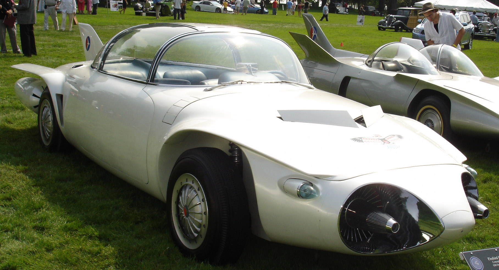
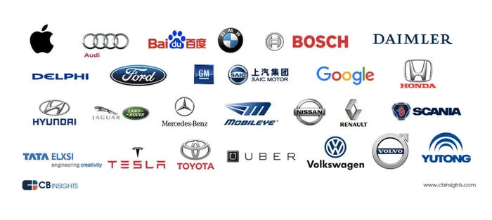

A self-driving car (sometimes called an autonomous car or driverless car) is a vehicle that uses a combination of sensors, cameras, radar and artificial intelligence (AI) to travel between destinations without a human operator.
* Later, in the 1980s, the German Ernst Dickmanns, who is
considered the father of the autonomous vehicle as we
know it today, converted a Mercedes-Benz van into an
autonomous vehicle guided by an integrated computer.
* In 1987, the car managed to travel through traffic-free
streets at a speed of 63 kilometers per hour.
Companies promoting driverless cars have employed various strategies to spread
awareness and build public acceptance. These strategies include:
* Public Demonstrations
* Media Coverage
* Social Media and Online Marketing
* Educational Campaigns
* Partnerships and Collaborations
* Public Outreach and Town Halls
* Regulatory Engagement
* Academic Involvement
* Industry Conferences and Exhibitions
* User Experience Testing
* Consumer Testing and Beta Programs
* Safety and Transparency Reports
* Pilot Programs
* Computers based on sophisticated systems and algorithms will
essentially eliminate costly human error.
* Major causes of accidents, including drunk or distracted driving,
will not be factors with self-driving cars.
* It's estimated self-driving cars can reduce accidents by up to 90%.
* Mobility for the elderly and disabled, who may not be physically
or legally able to operate a human-driven vehicle.
* Reduced traffic congestion, thanks to self-driving cars
communicating and coordinating with one another.
* The applications running a car’s infotainment system can receive information from sensor data
fusion systems and have, for example, the ability to direct the vehicle to a hospital if it senses that
something is wrong with the driver. This machine learning-based application can also incorporate
the driver’s gesture and speech recognition, and language translation. The algorithms can be
classified as a supervised algorithm and an unsupervised algorithm. The difference between the
two is how they learn.
* Supervised algorithms learn using a training dataset, and keep on learning until they reach the
desired level of confidence (minimization of probability error). They can be sub-classified into
classification, regression and dimension reduction or anomaly detection.
* Unsupervised algorithms try to make sense of the available data. That means an algorithm
develops a relationship within the available data set to identify patterns, or divides the data set into
subgroups based on the level of similarity between them. Unsupervised algorithms can be largely
sub-classified into clustering and association rule learning.
* There is now another set of machine learning algorithms called reinforcement algorithms, which
fall somewhere between supervised and unsupervised learning. In supervised learning, there is a
target label for each training example; in unsupervised learning, there are no labels at all; and
reinforcement learning has sparse and time-delayed labels – the future rewards.
* Based only on those rewards, the agent has to learn to behave
in the environment. The goal in reinforcement learning is to
develop efficient learning algorithms, as well as to
understand the algorithm’s merits and limitations.
Reinforcement learning is of great interest because of the
large number of practical applications that it can potentially
address, ranging from problems in artificial intelligence to
operations research or control engineering – all relevant for
developing a self-driving car. This can be classified as direct
learning and indirect learning.
* Machine learning algorithms can be loosely divided into four
categories: regression algorithms, pattern recognition, cluster
algorithms and decision matrix algorithms. One category of
machine learning algorithms can be used to execute two or
more different subtasks. For example, regression algorithms
can be used for object detection as well as for object
localization or prediction of movement.
Regression Algorithms:
* This type of algorithm is good at predicting events. Regression analysis estimates the
relationship between two or more variables, compare the effects of variables measured on
different scales and are mostly driven by three metrics, namely:
* The number of independent variables
* The type of dependent variables
* The shape of the regression line.
* In ADAS, images (radar or camera) play a very important role in localization and actuation,
while the biggest challenge for any algorithm is to develop an image-based model for
prediction and feature selection.
* Regression algorithms leverage the repeatability of the environment to create a statistical
model of the relation between an image and the position of a given object in that image. The
statistical model can be learned offline and provides fast online detection by allowing image
sampling. Furthermore, it can be extended to other objects without requiring extensive
human modeling. As an output to the online stage, the algorithm returns an object position
and a confidence on the presence of the object.
* These algorithms can also be used for long learning, short prediction. The type of regression
algorithms that can be used for self-driving cars are Bayesian regression, neural network
regression and decision forest regression, among others.
Pattern Recognition Algorithms (Classification):
* In ADAS, the images obtained through sensors possess all types of
environmental data; filtering of the images is required to recognize
instances of an object category by ruling out the irrelevant data points.
Pattern recognition algorithms are good at ruling out these unusual data
points. Recognition of patterns in a data set is an important step before
classifying the objects. These types of algorithms can also be defined as
data reduction algorithms.
* These algorithms help in reducing the data set by detecting object edges
and fitting line segments (polylines) and circular arcs to the edges. Line
segments are aligned to edges up to a corner, then a new line segment is
started. Circular arcs are fit to sequences of line segments that approximate
an arc. The image features (line segments and circular arcs) are combined
in various ways to form the features that are used for recognizing an
object.
* The support vector machines (SVM) with histograms of oriented gradients
(HOG) and principle component analysis (PCA) are the most common
recognition algorithms used in ADAS. The Bayes decision rule and K
nearest neighbor (KNN) are also used.
Clusering:
* Sometimes the images obtained by the system are not clear
and it is difficult to detect and locate objects. It is also
possible that the classification algorithms may miss the
object and fail to classify and report it to the system. The
reason could be low-resolution images, very few data points
or discontinuous data. This type of algorithm is good at
discovering structure from data points. Like regression, it
describes the class of problem and the class of methods.
* Clustering methods are typically organized by modeling
approaches such as centroid-based and hierarchical. All
methods are concerned with using the inherent structures in
the data to best organize the data into groups of maximum
commonality. The most commonly used type of algorithm is
K-means, Multi-class Neural Network.
Decision Matrix Algorithms:
* This type of algorithm is good at systematically identifying,
analyzing, and rating the performance of relationships
between sets of values and information. These algorithms
are mainly used for decision making. Whether a car needs to
take a left turn or it needs to brake depends on the level of
confidence the algorithms have on the classification,
* These algorithms are models composed of multiple decision
models independently trained and whose predictions are
combined in some way to make the overall prediction, while
reducing the possibility of errors in decision making. The
most commonly used algorithms are gradient boosting
(GDM) and AdaBoosting.
More Safety:
* Accidents are often caused by driver fatigue, lack of attention or incorrect
behavior. This means that almost 99% of all accidents are due to human
error. With the elimination of the driver as a source of error and
increasing sophistication of systems (sensors, cameras, and AI system),
driving can be made more efficient and the accident rate can be reduced.
In addition, autonomous vehicles have a lower reaction time and thus
shorten braking and starting times.
More Efficiency in Traffic:
* Autonomous vehicles are able to communicate and coordinate with each
other (Car2x communication). They can thus improve traffic flow and
increase road capacity.
* This reduces annoying and time-consuming traffic jams, allows shorter
routes to be taken, and makes driving more efficient and
energy-saving overall. This also offers major advantages in logistics.
Accessibility:
* Autonomous driving can improve accessibility. Even people who may still
have to rely on others for mobility today, will have the opportunity
to participate in road traffic again in a self-determined manner thanks
to autonomous driving.
* Economically, this results in another advantage, namely that manufacturers
can thus tap into a larger target and customer group.
Parking Spaces:
* With autonomous vehicles, fewer parking spaces are needed if the car lets
the passenger off and continues on to the next destination. However, if a
parking space is still needed, the user is spared the long search for a free
space, because the car can independently look for a parking space and then
transmit the position data.
* Conversely, the vehicle can also move from the parking space to the
user – keyword: valet parking.
More Time and Comfort:
* Depending on the level of the autonomous vehicle, drivers can sit
back and relax, take short breaks and devote their time to other
things. In the best case, with a level 5 vehicle, you are just a
passenger, while the means of transport reliably takes you to your
destination.
Reduced CO2 Emissions:
* Since vehicles are no longer parked in the city but can
independently find a place to wair outside the city, there is more
space for green areas within cities. In addition, the efficient
driving of the vehicle reduces CO2 emissions.
* Technology also plays a role: Environmentally friendly
alternatives such as battery-electric, hybrid, or hydrogen-based
drives lend themselves to this, as charging and refueling times can
be calculated by the system and planned in good time.
Reduced Operating Costs:
* Driverless transportation offers opportunities
for cost savings in logistics and the mobility
sector. Equipping a vehicle with the necessary
systems is more profitable than the labor costs for
driving personnel.
* The costs saved can be used to open up new areas
and expand services. The same applies to freight
transport: With autonomous vehicles, delivery
processes can take place at low-traffic
times, optimizing the last mile, for example.
Technical Developments:
* A system participating in road traffic must transmit,
evaluate and calculate large amounts of data in real
time for accurate predictions. In order to fully comprehend
the driving environment with the large number of road users
and the many dynamic processes (even in difficult and
complex situations), this system must be highly
sophisticated – otherwise it cannot reliably plan the driving
course in terms of space and time.
* A single error in the software can therefore already lead to
traffic accidents. Important: A technical system cannot be
matured by testing alone, since no test environment that
really covers all situations can be realistically generated.
The prerequisite is therefore an adaptive system that is
capable of detecting and correcting errors.
Expensive:
* Since the implementation of autonomous driving involves many
sub-areas that need to be coordinated or aligned, and the technology alone
is a very costly factor, initial acquisition costs are likely to be very high.
Surveillance:
Where software is involved, two problematic aspects are always
present: hacker attacks and data protection issues. So, a car that is
continuously online – similar to PC and smartphone – provides attack
areas for malicious attacks. For example, via:
* Bluetooth
* SD cards
* Interfaces (USB and diagnostic interfaces)
* SIM cards
* In general, the collection of personal data (e.g., video and audio
recordings inside the vehicle) is necessary for autonomous vehicles. For
example, to compensate for system errors or to be able to evaluate critical
situations in legal proceedings.
* Here, the question then also arises as to who owns these recordings – the
manufacturer or owner of the carsharing group or the vehicle occupants?
Privacy risks can therefore not be ruled out.
Rebound Effects:
* Since autonomous vehicles are primarily characterized by
comfort, it is possible that they will enjoy great popularity
and that this will be accompanied by an increase in
passenger car traffic. In order to prevent a significant
increase in the number of vehicles on the road and thus
also ecologically negative effects, the registration of
autonomous vehicles must be controlled.
Legal Aspects:
* In the event of an accident in which there was no person at
the wheel, the situation must be assessed completely
differently under traffic law than before. Traffic law will
have to be adapted to the presence of autonomous vehicles
on the road. After all, no real person can be prosecuted in
the event of a traffic offense caused by an automated vehicle.

